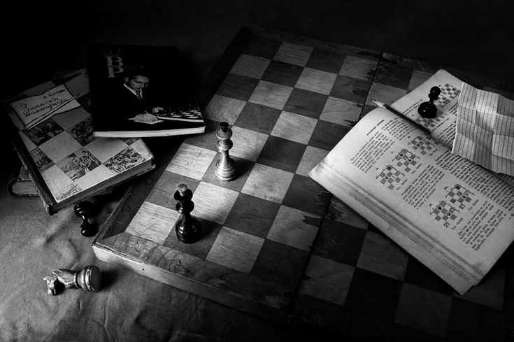
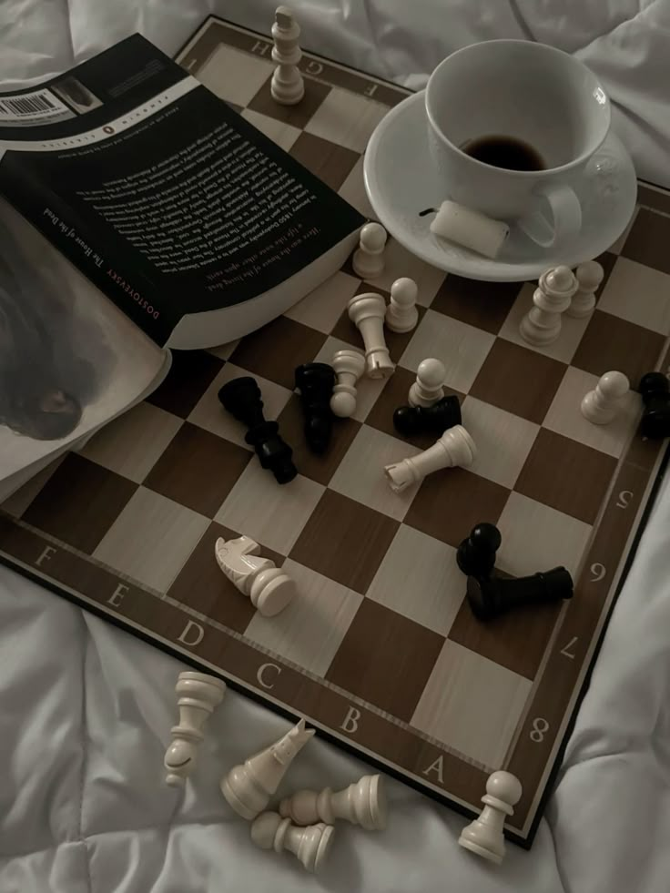
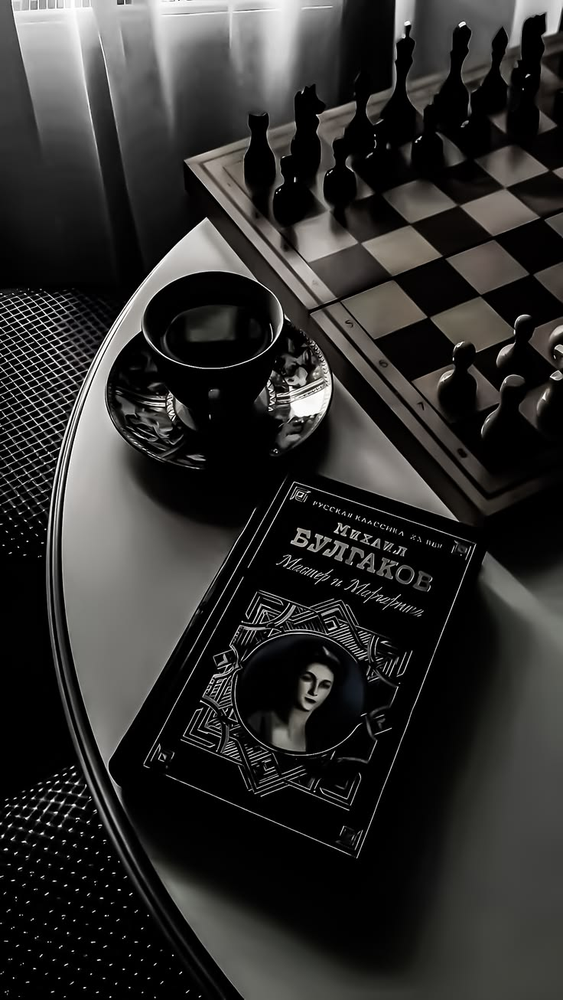

i let myself lose. that's the part that matters.
a friend and i play chess because we're the kind of people who need something to do while we're talking. the talking is the point but the chess is the framework that lets the talking happen without it feeling like we're just sitting in the heaviness of being alive.
usually i win. not because i'm significantly better — we're honestly at similar levels — but because i pay attention to the game in a way my friend doesn't. she gets distracted. talks about something real and forgets that you can lose a piece to a careless move. that's part of why i win.



but this time i saw the setup and i didn't take it. saw the bishop exposed and didn't move my knight into position. watched the trap miss three times and didn't spring it. she won. cleanly. because i let her. and the interesting thing is that she knew. she knew while it was happening. played the rest of the game anyway. didn't call me out.
we finished and she just looked at me and said "you okay." not a question even though the mark was there. just a statement that understood. i said: "just wanted to see you win today." and she understood that too. understood that sometimes friendship is about creating conditions where the people you love can feel good about themselves.
i think it depends on whether you're deciding what someone needs versus whether you're actually reading the situation and responding to what they need. the difference is subtle but it matters. she'd been selling herself short for weeks. she needed to win at something. i made that possible. she'd do the same for me. that's kind of the whole thing isn't it.
← Back to Blog